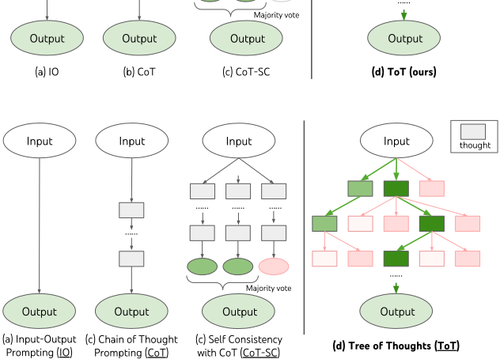
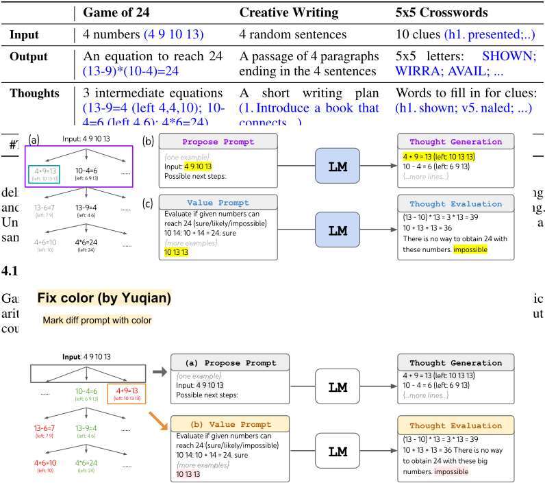
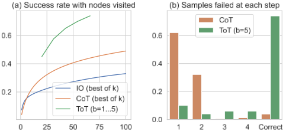
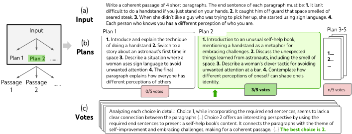
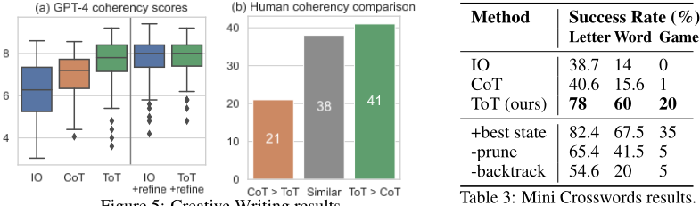
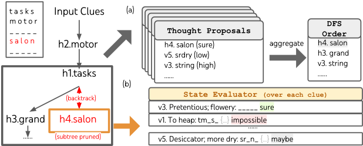

Tree of Thoughts（思维之树）：利用 LLM 进行审慎式问题求解
LLM 在推理阶段只能做 token 级、从左到右的自回归决策，缺乏局部探索、全局前瞻与回溯，在需要规划或搜索的任务上表现不佳。论文提出 Tree of Thoughts（ToT）推理框架，将 CoT 泛化为树搜索：把中间推理分解为可评估的 thought 步骤，每步生成多个候选，由 LM 自评估状态价值或投票，再用 BFS/DFS 进行带剪枝与回溯的系统搜索，全程无需额外训练。在 Game of 24 上，GPT-4 + CoT 仅解出 4%，ToT 达到 74%；Mini Crosswords 词级正确率从不足 16% 提升到 60%。代价是 token 消耗可达 CoT 的 5-100 倍，且对 GPT-4 已擅长的任务收益有限。对团队而言，这是提示工程与 Agent 规划/反思设计的经典方法，也是难任务上做可靠性提升与成本权衡的重要参考。
现有 LLM 推理机制是 token 级、从左到右的，存在两个关键缺陷：局部上无法在思维过程中探索不同的延续分支；全局上缺乏规划、前瞻与回溯等启发式引导的搜索机制，导致在需要探索、策略性前瞻或初始决策至关重要的任务上表现不足。
提出 Tree of Thoughts（ToT）框架，将问题求解建模为对'思维树'的搜索，节点状态 s=[x, z1..i] 由输入与已有 thought 序列组成，涉及四个设计维度：1) 思维分解——按问题性质把中间步骤设计为几个词、一行等式或一段写作计划等粒度；2) 思维生成——从状态独立采样 k 个候选或顺序 propose；3) 状态评估——用 LM 对状态打分或对候选投票，作为搜索启发式（以往启发式需人工编程或训练模型，此处由 LM 审慎推理充当）；4) 搜索算法——BFS 每步保留最优 b 个候选，或 DFS 沿最有希望的分支深入、状态被判定不可行时回溯剪枝。框架模块化，基础 LM、分解、生成、评估与搜索算法可独立替换；IO、CoT、CoT-SC、self-refinement 均为其特例。
Game of 24（GPT-4）：IO 7.3%、CoT 4.0%、CoT-SC 9.0%；ToT b=1 达 45%、b=5 达 74%；best of 100 个 CoT 样本也仅 49%
Creative Writing（GPT-4 自动评分）：ToT 7.56 vs CoT 6.93 vs IO 6.19；人类盲评中 41/100 对偏好 ToT、21/100 偏好 CoT；iterative-refine 将 IO 从 6.19 提至 7.67、ToT 从 7.56 提至 7.91
Mini Crosswords：IO/CoT 词级正确率不足 16%，ToT 达 60% 并解出 4/20 局；oracle 最优 DFS 状态可解 7/20；去掉回溯的消融仅 20%
GPT-3.5 上 ToT > CoT > IO 依然成立；Creative Writing 上 GPT-3.5+ToT 超过 GPT-4+IO；Game of 24 上 GPT-4 生成+GPT-3.5 评估达 64%，GPT-3.5 生成+GPT-4 评估仅 31%，说明该任务瓶颈在思维生成
GSM8K 与 StrategyQA 上 zero-shot ToT 仅略优于 CoT（GPT-4+CoT 在这些任务上已很强）
成本：Game of 24 单题 ToT 需 5.5k completion tokens，接近 100 次 CoT 试验的 6.7k tokens；Creative Writing 约 5 倍 token 与费用；总体 ToT 可能需要 CoT 的 5-100 倍生成 token
首次将通过 LM 自我评估与审慎推理实例化的搜索启发式用于问题求解（以往搜索启发式要么人工编程如 DeepBlue，要么训练学习如 AlphaGo）；将 IO、CoT、CoT-SC、self-refinement 统一为 ToT 在有限深度/宽度下的特例；框架高度模块化，思维分解、生成、评估与搜索算法可独立变化；无需额外训练，仅需预训练 LM 即可即插即用不同搜索算法。与并行的 RAP 相比任务更难且支持不同树搜索算法的模块化组合。
相关度级别：high
命中能力域：3.2 提示工程 | 3.3 Agent 架构与工具使用 | 3.5 评测与可靠使用
理由：ToT 直接命中团队两个核心能力域：3.2 提示工程——它是 CoT 的系统化泛化，思维分解、propose 生成、价值评估与投票全部通过提示词实现，是推理型提示技术的代表作；3.3 Agent 架构——多候选生成、LM 自评估、前瞻与回溯正是 Agent loop 中规划与反思模块的设计范式，可视为单 Agent 执行可靠性的搜索化方案。此外论文系统给出消融实验与成本分析（5-100 倍 token、生成/评估模型可分离以降成本），对 3.5 的成本-性能权衡与评测方法设计有直接参考价值。对'把模型用好而非训练模型'的团队，这是在难任务上提升一次通过率的经典推理时方法。
建议动作：深入精读并做内部分享
arXiv:2305.10601v2 [cs.CL] 2023年12月3日
语言模型正日益被部署用于跨各类任务的通用问题求解，但在推理过程中仍局限于词元级、从左到右的决策过程。这意味着它们在需要探索、策略性前瞻，或初始决策起关键作用的任务中可能表现不佳。为克服这些挑战，我们提出了一种新的语言模型推理框架——“思维树”（Tree of Thoughts, ToT），它对流行的“思维链”（Chain of Thought, CoT）提示语言模型方法进行了泛化，并支持对连贯的文本单元（“思维”）进行探索，这些单元作为通向问题求解的中间步骤。ToT 使语言模型（LM）能够通过考虑多条不同的推理路径并自我评估各种选择来决定下一步行动，从而进行深思熟虑的决策，并在必要时进行前瞻或回溯以做出全局性选择。我们的实验表明，ToT 在三个需要非平凡规划或搜索的新任务上显著增强了语言模型的问题求解能力：24 点游戏（Game of 24）、创意写作（Creative Writing）和迷你填字游戏（Mini Crosswords）。例如，在 24 点游戏中，使用思维链提示的 GPT-4 仅解决了 4% 的任务，而我们的方法达到了 74% 的成功率。包含所有提示的代码仓库：https://github.com/princeton-nlp/tree-of-thought-llm 。
语言模型（Language Model, LM）最初是为生成文本而设计的，但诸如 GPT [25, 26, 1, 23] 和 PaLM [5] 等经过规模扩展的语言模型已被证明越来越有能力完成范围日益广泛的任务，这些任务需要数学、符号、常识和知识推理。或许令人惊讶的是，所有这些进展的背后仍然是原始的自回归文本生成机制，它以从左到右的方式逐个做出词元（token）级决策。这样一个简单的机制是否足以将 LM 构建为通用问题求解器？如果不能，哪些问题会挑战当前范式，又应该有哪些替代机制？
关于人类认知的文献为回答这些问题提供了一些线索。关于“双过程”（dual process）模型的研究表明，人们以两种模式参与决策——一种是快速、自动、无意识的模式（“系统 1”，System 1），另一种是缓慢、审慎、有意识的模式（“系统 2”，System 2）[30, 31, 16, 15]。这两种模式此前已被与机器学习中使用的多种数学模型联系起来。例如，对人类和其他动物强化学习的研究探讨了它们在何种情况下进行联想式的“无模型”（model free）学习，或更审慎的“基于模型”（model based）规划 [7]。LM 简单的联想式词元级选择同样让人联想到“系统 1”，因此可能受益于一种更审慎的“系统 2”规划过程的增强，该过程 (1) 维护并探索当前选择的多种备选方案，而不是仅仅挑选其一，并且 (2) 评估其当前状态，并主动向前展望或向后回溯，以做出更全局的决策。
第 37 届神经信息处理系统大会（NeurIPS 2023）。

为了设计这样一种规划过程，我们回归人工智能（以及认知科学）的起源，从 Newell、Shaw 和 Simon 自 20 世纪 50 年代起所探索的规划过程中汲取灵感 [21, 22]。Newell 及其同事将问题求解 [21] 刻画为在以树表示的组合问题空间中进行搜索。因此，我们提出了用于语言模型（Language Model, LM）通用问题求解的思维树（Tree of Thoughts, ToT）框架。如图 1 所示，现有方法（下文详述）通过采样连续的语言序列来进行问题求解，而 ToT 则主动维护一棵思维树，其中每个思维都是一个连贯的语言序列，作为通向问题求解的中间步骤（表 1）。这种高层语义单元使语言模型能够通过一种同样以语言实例化的深思熟虑推理过程，自我评估不同中间思维在解决问题方面所取得的进展（图 2、4、6）。通过语言模型自我评估与深思来实现搜索启发式是一种新颖的做法，因为以往的搜索启发式要么是编程实现的，要么是学习得到的。最后，我们将这种基于语言的生成和评估多样化思维的能力与搜索算法（如广度优先搜索（breadth-first search, BFS）或深度优先搜索（depth-first search, DFS））相结合，从而能够以前瞻和回溯的方式对思维树进行系统性探索。
在实验方面，我们提出了三个新问题，即使使用最先进的语言模型 GPT-4 [23]，它们也对现有的语言模型推理方法构成挑战：24 点游戏（Game of 24）、创意写作（Creative Writing）和填字游戏（Crosswords）（表 1）。这些任务需要演绎、数学、常识和词汇推理能力，以及一种融入系统性规划或搜索的方法。我们表明，ToT 在所有三个任务上都取得了优越的结果，因为它足够通用和灵活，能够支持不同层次的思维、不同的思维生成与评估方式，以及能够适应不同问题性质的不同搜索算法。我们还通过系统性消融实验分析了这些选择如何影响模型性能，并讨论了更好地训练和使用语言模型的未来方向。
我们首先对一些现有的利用大语言模型进行问题求解的方法进行形式化，我们的方法受其启发，并将在后文与之进行比较。我们用 p θ 表示参数为 θ 的预训练语言模型（LM），用小写字母 x, y, z, s, · · · 表示一个语言序列，即 x = ( x [1] , · · · , x [ n ])，其中每个 x [ i ] 是一个词元（token），因此 p θ ( x ) = ∏ n i =1 p θ ( x [ i ] | x [1 ...i ]) 。我们用大写字母 S, · · · 表示语言序列的集合。
输入-输出（IO）提示（prompting）是使用语言模型将问题输入 x 转化为输出 y 的最常见方式：y ∼ p θ ( y | prompt IO ( x )) ，其中 prompt IO ( x ) 将输入 x 用任务指令和/或少样本（few-shot）输入-输出示例包裹起来。为简单起见，我们记 p prompt θ ( output | input ) = p θ ( output | prompt ( input )) ，从而 IO 提示可以表述为 y ∼ p IO θ ( y | x ) 。
思维链（CoT）提示 [38] 被提出用于处理输入 x 到输出 y 的映射非平凡的情况（例如当 x 是一道数学题而 y 是最终的数值答案时）。其关键思想是引入一条思维链 z 1 , · · · , z n 来连接 x 和 y，其中每个 z i 是一个连贯的语言序列，作为通向问题求解的有意义的中间步骤（例如 z i 可以是数学问答中的一个中间方程）。使用 CoT 求解问题时，每个思维 z i ∼ p CoT θ ( z i | x, z 1 ··· i - 1 ) 被顺序采样，然后输出 y ∼ p CoT θ ( y | x, z 1 ··· n ) 。在实践中，[ z 1 ··· n , y ] ∼ p CoT θ ( z 1 ··· n , y | x ) 是作为一个连续的语言序列被采样的，而思维的分解方式（例如每个 z i 是一个短语、一个句子还是一个段落）则保持模糊。
基于 CoT 的自洽性（CoT-SC）[36] 是一种集成（ensemble）方法，它采样 k 条独立同分布（i.i.d.）的思维链：[ z ( i ) 1 ··· n , y ( i ) ] ∼ p CoT θ ( z 1 ··· n , y | x ) ( i = 1 · · · k ) ，然后返回出现最频繁的输出：arg max y # { i | y ( i ) = y } 。CoT-SC 相较于 CoT 有所改进，因为同一个问题通常存在不同的思维过程（例如证明同一定理的不同方法），通过探索更丰富的思维集合，输出决策可以更加忠实。然而，在每条思维链内部并不存在对不同思维步骤的局部探索，并且“最频繁”这一启发式方法只在输出空间有限的情况下才适用（例如多项选择问答）。
一个真正的问题求解过程，需要反复利用可获得的信息来启动探索，而探索又会相继揭示出更多信息，直到最终发现获得解的途径。—— Newell et al. [21]
关于人类问题求解的研究表明，人们会在一个组合问题空间中进行搜索——这是一棵树，其中节点表示部分解，分支则对应于修改这些部分解的算子 [21, 22]。选择走哪条分支由启发式方法决定，这些启发式方法帮助在问题空间中导航，并引导问题求解者走向解。这一视角凸显了现有使用语言模型（LM）求解一般问题的方法的两个关键不足：1）在局部上，它们不会在思维过程内部探索不同的延续——即树的分支；2）在全局上，它们不会纳入任何类型的规划、前瞻或回溯来帮助评估这些不同的选项——而这种启发式引导的搜索似乎正是人类问题求解的典型特征。
为了弥补这些不足，我们提出了思维树（Tree of Thoughts, ToT），这是一种让 LM 能够在思维之上探索多条推理路径的范式（图 1(c)）。ToT 将任何问题都框架化为在一棵树上进行的搜索，其中每个节点是一个状态 s = [ x, z 1 ··· i ]，表示由输入和迄今为止的思维序列组成的部分解。ToT 的一个具体实例化需要回答四个问题：1. 如何将中间过程分解为思维步骤；2. 如何从每个状态生成潜在思维；3. 如何启发式地评估状态；4. 使用何种搜索算法。
1. 思维分解。思维链（CoT）在没有显式分解的情况下连贯地采样思维，而 ToT 则利用问题自身的属性来设计和分解中间思维步骤。如表 1 所示，视问题的不同，一个思维可以是几个词（填字游戏 Crosswords）、一行方程（24 点游戏 Game of 24），或一整段写作计划（创意写作 Creative Writing）。一般而言，一个思维应当足够“小”，使得 LM 能够生成有前景且多样的样本（例如，生成一整本书通常太“大”而难以保持连贯），但又足够“大”，使得 LM 能够评估其对于问题求解的前景（例如，生成一个 token 通常太“小”而难以评估）。
2. 思维生成器 G ( p θ , s, k )。给定树状态 s = [ x, z 1 ··· i ]，我们考虑两种策略来为下一个思维步骤生成 k 个候选：
3. 状态评估器 V ( p θ , S )。给定由不同状态构成的前沿，状态评估器评估这些状态在解决问题方面所取得的进展，作为搜索算法的启发式方法，用于决定应继续探索哪些状态以及以何种顺序进行探索。虽然启发式方法是解决搜索问题的标准途径，但它们通常要么是人工编程的（例如 DeepBlue [3]），要么是通过学习获得的（例如 AlphaGo [29]）。我们提出第三种替代方案，即利用 LM 对状态进行深思熟虑的推理。在适用的情况下，这种深思熟虑式的启发式方法可以比编程规则更灵活，并且比学习得到的模型更具样本效率。与思维生成器类似，我们考虑两种策略来评估状态：独立评估或共同评估：
对于这两种策略，我们都可以多次提示 LM，以聚合价值或投票结果，从而以时间/资源/成本换取更忠实/更稳健的启发式方法。
| Algorithm 1 ToT-BFS( x, p θ ,G,k,V,T,b ) | Algorithm 2 ToT-DFS( s, t,p θ ,G,k,V,T,v th ) |
|---|---|
| Require: Input x ,LM p θ , thought generator G &size limit k , states evaluator V () , step limit T breadth limit b . S 0 ←{ x } for t = 1 , · · · ,T do S ′ t ←{ [ s, z ] | s ∈ S t - 1 , z t ∈ G( p θ , s,k ) } V t ← V ( p θ ,S ′ t ) S t ← argmax S ⊂ S ′ t , |
| Algorithm 1 ToT-BFS( x, p θ ,G,k,V,T,b ) | Algorithm 2 ToT-DFS( s, t,p θ ,G,k,V,T,v th ) |
4. 搜索算法。最后，在 ToT 框架内，可以根据树结构即插即用地采用不同的搜索算法。我们探索了两种相对简单的搜索算法，并将更高级的算法（例如 A* [11]、MCTS [2]）留待未来工作：
从概念上讲，作为利用 LM 进行通用问题求解的方法，ToT 具有以下几项优势：（1）通用性。IO、CoT、CoT-SC 和自我精炼都可以看作是 ToT 的特例（即深度和广度受限的树；图 1）。（2）模块化。基础 LM 以及思维分解、生成、评估和搜索过程都可以独立变化。（3）适应性。可以适应不同的问题属性、LM 能力和资源约束。（4）便捷性。无需额外训练，仅需一个预训练 LM 即可。下一节将展示这些概念上的优势如何转化为在不同问题上的强大实证性能。
We propose three tasks that are hard even when sampling from the state-of-the-art language model, GPT-4 [23], using standard IO prompting or chain-of-thought (CoT) prompting. We show how Task Setup. We scrape data from 4nums.com, which has 1,362 games that are sorted from easy to hard by human solving time, and use a subset of relatively hard games indexed 901-1,000 for testing. For each task, we consider the output as success if it is a valid equation that equals 24 and uses the input numbers each exactly once. We report the success rate across 100 games as the metric.
| Game of 24 | Creative Writing | 5x5 Crosswords |
|---|---|---|
| Input 4 numbers (4 9 10 13) 4 random sentences | presented;..) | 10 clues (h1. |
| Output An equation to reach 24 (13-9)*(10-4)=24 Apassage of 4 ending in the 4 | paragraphs sentences | 5x5 letters: SHOWN; WIRRA; AVAIL; ... |
| Thoughts 3 intermediate equations (13-9=4 (left 4,4,10); 10- | A short writing plan (1. Introduce a book that | Words to fill in for clues: (h1. shown; v5. naled; ...) |
| Game of 24 | Creative Writing | 5x5 Crosswords |

Baselines. We use a standard input-output (IO) prompt with 5 in-context examples. For chain-ofthought (CoT) prompting, we augment each input-output pair with 3 intermediate equations, each operating on two remaining numbers. For example, given input '4 9 10 13', the thoughts could be '13 - 9 = 4 (left: 4 4 10); 10 - 4 = 6 (left: 4 6); 4 * 6 = 24 (left: 24)'. For each game, we sample IO and CoT prompting for 100 times for average performance. We also consider a CoT self-consistency baseline, which takes the majority output from 100 CoT samples, and an iterative-refine approach on top of an IO sample for at most 10 iterations. At each iteration, the LM is conditioned on all previous history to 'reflect on your mistakes and generate a refined answer' if the output is incorrect. Note that it uses groundtruth feedback signals about equation correctness.
ToT Setup. To frame Game of 24 into ToT, it is natural to decompose the thoughts into 3 steps, each an intermediate equation. As shown in Figure 2(a), at each tree node, we exact the remaining numbers and prompt the LM to propose some possible next steps. The same 'propose prompt' is used for all 3 thought steps, though it only has one example with 4 input numbers. We perform a breadth-first search (BFS) in ToT, where at each step we keep the best b = 5 candidates. To perform deliberate BFS in ToT, as shown in Figure 2(b), we prompt LM to evaluate each thought candidate as 'sure/maybe/impossible' with regard to reaching 24. The aim is to promote correct partial solutions that can be verdicted within few lookahead trials, and eliminate impossible partial solutions based on 'too big/small' commonsense, and keep the rest 'maybe'. We sample values 3 times for each thought.
1 Experiments were done between May 5-16, 2023.
| Method | Success |
|---|---|
| IO prompt | 7.3% |
| CoT prompt | 4.0% |
| CoT-SC (k=100) | 9.0% |
| ToT (ours) (b=1) | 45% |
| ToT (ours) (b=5) | 74% |
| IO + Refine (k=10) | 27% |
| IO (best of 100) | 33% |
| CoT (best of 100) | 49% |
| Method | Success |

结果。如表 2 所示，IO、CoT 和 CoT-SC 提示方法在该任务上表现很差，成功率分别仅为 7.3%、4.0% 和 9.0%。相比之下，宽度为 b = 1 的 ToT 已能达到 45% 的成功率，而 b = 5 时可达 74%。我们还为 IO/CoT 考虑了一种 oracle 设置，即使用 k 个样本中的最优结果（best of k，1 ≤ k ≤ 100）来计算成功率。为了将 IO/CoT（best of k）与 ToT 进行比较，我们计算了 ToT 在 b = 1 · · · 5 下每个任务所访问的树节点数，并将这 5 个成功率绘制在图 3(a) 中，同时将 IO/CoT（best of k）视为在老虎机（bandit）中访问 k 个节点。不出所料，CoT 的扩展性优于 IO，100 个 CoT 样本中的最优可达 49% 的成功率，但仍远逊于在 ToT 中探索更多节点（b > 1）的效果。
错误分析。图 3(b) 细分了 CoT 和 ToT 样本在任务的哪一步失败，即（CoT 中的）思维或（ToT 中的）全部 b 个思维无效或无法凑出 24。值得注意的是，约 60% 的 CoT 样本在生成第一步之后就已失败，等价地说，就是在生成前三个词（例如 '4 + 9'）之后。这凸显了直接从左到右解码所存在的问题。
接下来，我们设计了一个创意写作任务，其输入为 4 个随机句子，输出应为一段连贯的文章，包含 4 个段落，并分别以这 4 个输入句子结尾。这样的任务是开放式的、探索性的，既挑战创造性思维，也挑战高层规划能力。
任务设置。我们从 randomwordgenerator.com 采样随机句子，构成 100 个输入，且每个输入约束都没有标准答案文章。由于我们发现 GPT-4 大多数时候都能遵循输入约束，因此我们专注于通过两种方式评估文章的连贯性：使用 GPT-4 零样本（zero-shot）提示给出 1-10 的标量分数，或使用人工判断来比较不同方法输出的成对结果。对于前者，我们对每个任务输出采样 5 个分数并取平均，我们发现这 5 个分数通常较为一致，各输出上的标准差平均约为 0.56。对于后者，我们让部分作者参与一项盲测研究，比较 CoT 与 ToT 所生成文章对的连贯性，其中文章的顺序在 100 个输入上随机翻转。
基线。鉴于该任务的创造性本质，IO 和 CoT 提示均为零样本提示。前者提示语言模型（LM）在给定输入约束的情况下直接生成一篇连贯文章，后者则提示 LM 先制定一个简要计划再撰写文章，即计划充当中间思维步骤。我们为每个任务生成 10 个 IO 和 CoT 样本。我们还考虑了在每个任务的随机 IO 样本之上进行迭代改进（iterative-refine，k ≤ 5）的方法，其中 LM 以输入约束和上一次生成的文章为条件，判断该文章是否已经“完全连贯”，若否则生成一篇改进后的文章。
ToT 设置。我们构建了一个深度为 2 的 ToT（且仅有 1 个中间思维步骤）——LM 首先生成 k = 5 个计划并投票选出最佳的一个（图 4），然后类似地基于最佳计划生成 k = 5 篇文章并投票选出最佳的一篇。这里宽度限制 b = 1，因为每一步只保留一个选择。两个步骤均使用一个简单的零样本投票提示（“分析以下选项，然后得出哪个选项对指令最有前景”）来采样 5 票。
结果。图 5(a) 展示了 100 个任务上的平均 GPT-4 分数，其中 ToT（7.56）被认为平均而言能生成比 IO（6.19）和 CoT（6.93）更连贯的文章。虽然这种自动指标可能有噪声，但图 5(b) 证实了这一发现：在 100 对文章中，人类在 41 对中更偏好 ToT 而非 CoT，而仅在 21 对中更偏好 CoT 而非 ToT（其余 38 对被认为“连贯性相近”）。最后，迭代改进在这一自然语言任务上更为有效，其中

| Method | Success Rate (%) Letter Word Game | Success Rate (%) Letter Word Game | Success Rate (%) Letter Word Game |
|---|---|---|---|
| IO CoT | 38.7 | 14 15.6 | 0 1 |
| 40.6 | |||
| ToT (ours) | 78 | 60 | 20 |
| +best state -prune | 82.4 | 67.5 | 35 |
| 65.4 | 41.5 | 5 | |
| -backtrack | 54.6 | 20 | 5 |
| Method | Success Rate (%) Letter Word Game | Success Rate (%) Letter Word Game | Success Rate (%) Letter Word Game |

它将 IO 的连贯性得分从 6.19 提升到 7.67，并将 ToT 的连贯性得分从 7.56 提升到 7.91。我们认为，这可以被视为 ToT 框架中思维生成的第三种方式：新思维可以从对旧思维的细化中产生，而不是通过独立同分布（i.i.d.）或顺序方式生成。
In Game of 24 and Creative Writing, ToT is relatively shallow - at most 3 thought steps are needed to reach the final output. Here we explore 5 × 5 mini crosswords as a harder search problem involving natural language. Again, the goal is not just to solve the task, as more general crosswords can be readily solved with specialized NLP pipelines [34] that leverages large-scale retrieval instead of LM. Rather, we aim to explore the limit of LM as a general problem solver that explores its own thoughts and guides its own exploration with deliberate reasoning as heuristics.
Task setup. We scrape data from GooBix, which contains 156 games of 5 × 5 mini crosswords. As we observe adjacent games contain similar clues, we use 20 games with indices 1 , 6 , · · · , 91 , 96 for testing, and games 136 , 141 , 146 , 151 , 156 for prompting. For each task, the input describes the 5 horizontal clues and 5 vertical clues, and the output should be a board of 5 × 5 = 25 letters to solve the crosswords. For evaluation, we consider three levels of success: the portion of correct letters (25 per game), words (10 per game), and games.
Baselines. We provide 5 example input-output pairs in the IO prompt, and in the CoT prompt additionally include intermediate words in the order h1..5 then v1..5. We run each prompt for 10 samples and average the results.
ToT setup. We leverage a depth-first search (Algorithm 2) that keeps exploring the most promising subsequent word clue until the state is no longer promising, then backtrack to the parent state to explore alternative thoughts. To make search tractable, subsequent thoughts are constrained not to change any filled words or letters, so that the ToT has at most 10 intermediate steps. For thought generation, at each state we translate all existing thoughts (e.g. 'h2.motor; h1.tasks' for the state in Figure 6(a)) into letter constraints for remaining clues (e.g. 'v1.To heap: tm ;...') and prompt a proposal prompt 5 times to come up with candidates for where and what to fill in the next word. Importantly, we also prompt the LM to give a confidence level for different thoughts, and aggregate these across proposals to obtain a sorted list of next thoughts to explore (Figure 6(a)). For state evaluations, we similarly translate each state into letter constraints for remaining clues, then evaluate for each clue if it is possible to fill given the constraints. If any remaining clue is deemed 'impossible' to fill in (e.g. 'v1. To heap: tm s '), then the exploration of the state's subtree is pruned and DFS backtracks to its parent to explore the next promising thought. We limit DFS search steps to 100, and simply render the deepest explored state (the first explored one if multiple) into the final output.
7

结果。如表 3 所示，IO 与思维链（CoT）提示方法表现不佳，词级成功率低于 16%，而 ToT 显著提升了所有指标，取得了 60% 的词级成功率，并解决了 20 局游戏中的 4 局。这样的提升并不令人意外，因为 IO 和 CoT 缺乏尝试不同线索、修改决策或进行回溯的机制。
Oracle 与消融研究。当从每个任务的 oracle 最优深度优先搜索（DFS）状态（而非启发式确定的最优状态）输出时，ToT 的性能更高，实际上解决了 20 局游戏中的 7 局（表 3，"+best state"），这表明我们简单的输出启发式方法还有很大的改进空间。有趣的是，有时当填字游戏实际上已被解出时，状态评估器仍可能将某些词判定为“不可能”并加以剪枝——这可能是因为 5 × 5 填字游戏在设计上包含一些 GPT-4 无法识别的生僻或过时词汇 2。鉴于作为剪枝启发式的状态评估并不完美，我们还探索了去除剪枝的消融实验，发现性能总体上更差（表 3，"-prune"）。然而，它实际上能为 20 局游戏中的 4 局找到正确答案（尽管通过启发式只输出了 1 局），其中 3 局是 ToT+剪枝在 100 步内无法解决的游戏。因此，在这种情况下，更好的 DFS 剪枝启发式方法对问题求解至关重要。最后，我们通过一项消融实验证实了回溯的重要性：该实验在最多 20 步内持续填充最有希望的线索，并允许覆盖。这类似于宽度限制为 b = 1 的“贪婪”广度优先搜索（BFS），其表现很差，词级成功率仅为 20%（表 3，"-backtrack"）。
规划与决策。智能的规划与决策对于实现预定目标至关重要。由于语言模型（LM）在海量的世界知识和人类示例上进行训练，众所周知其已经吸收了丰富的常识，因而能够根据问题设定和环境状态提出合理的规划 [12, 42, 37, 13, 35, 41, 40]。我们提出的 ToT 方法扩展了现有的规划形式化方法：在每个问题求解步骤中同时考虑多个潜在可行的规划，并沿着其中最有希望的规划继续推进。思维采样与价值反馈的结合有机地整合了规划与决策机制，从而能够在解树内进行有效搜索。另一方面，传统的决策流程通常需要像强化学习那样训练专门的奖励模型和策略模型（例如 CHAI [33]），而我们则利用 LM 本身为决策提供价值估计。RAP [9] 是一项同期工作，它将语言模型推理视为借助其内部世界模型进行的规划，并提出了一种与 ToT 类似的基于蒙特卡洛树搜索（MCTS）的方法。然而，其任务比我们的更简单，且其框架缺乏融合不同树搜索算法的模块化能力。
2 例如，"agend" 是 "agendum" 的一种过时形式，但 GPT-4 认为它是 "agenda" 的拼写错误。外部检索或网页交互可以在知识不确定的情况下增强 LM 的问题求解能力。
自我反思。利用大语言模型（LLM）评估其自身预测的可行性，正在成为问题求解中日益重要的环节。[28, 20, 24] 引入了“自我反思”（self-reflection）机制，其中 LM 为其生成候选提供反馈。[4] 通过注入由 LM 自身基于其代码执行结果生成的反馈消息，提高了 LM 的代码生成准确率。类似地，[17] 也引入了对动作和状态进行“批评”（critic）或审查的步骤，以决定在求解计算机操作任务时下一步采取的动作。另一项与我们非常相关的近期工作是“自评估引导解码”（self-eval guided decoding）[39]。与我们的方法类似，自评估解码同样遵循一种树搜索过程，其叶节点从随机束搜索解码中采样得到，随后由 LLM 本身使用精心准备的自评估提示进行评估。然而，他们的方法采用了 PAL 形式化方法 [8]，将思维表示为代码，这使得难以处理诸如本文所考虑的创意写作这类具有挑战性的任务。因此，我们的思维树（Tree-of-Thought）形式化方法更加通用，能够处理 GPT-4 在标准提示下仅能达到极低准确率的具有挑战性的任务。
程序引导的大语言模型（LLM）生成。我们的提议还与近期的一些进展相关，这些进展通过系统性流程 [14, 44, 6, 43] 或符号程序引导来组织语言模型（LM）的行为。例如，Schlag 等人 [27] 将 LM 嵌入到一种算法化搜索流程中，以帮助逐步求解问答等问题，其中搜索树通过可能提供答案的相关段落进行扩展。然而，该方法与我们的方法的不同之处在于：树是通过采样外部段落而非 LM 自身的思维来扩展的，并且不存在反思或投票步骤。另一种方法 LLM+P [18] 则更进一步，将实际的规划过程委托给经典规划器。
经典搜索方法。最后但同样重要的是，我们的方法可以被视为面向问题求解的经典搜索方法的一种现代演绎。例如，它可以被视为一种类似 A* [10] 的启发式搜索算法，其中每个搜索节点处的启发式信息由 LM 的自我评估提供。从这一视角来看，我们的方法还与 NeuroLogic A*esque 解码 [19] 相关，后者受 A* 搜索启发，但引入了对 LM 而言高效的前瞻启发式方法，以改进束搜索或 top-k 采样解码。然而，该方法仅限于句子生成任务，而我们的框架则是为受价值反馈保障的复杂多步问题求解而设计的。
局限性与未来方向。对于 GPT-4 已经擅长的许多现有任务而言，思维树（ToT）这类审慎式搜索可能并非必要（见附录 B.1）；作为一项初步工作，本文仅探索了三个对 GPT-4 具有挑战性的相对简单任务（部分 GPT-3.5 实验结果见附录 B.2），这些任务呼唤将更优的搜索与规划能力融入语言模型（LM）。然而，随着我们开始将 LM 部署到更多现实世界的决策应用中（例如编程、数据分析、机器人技术等），更复杂的任务可能会涌现，并为研究
ToT 是一个使语言模型（LM）能够更自主、更智能地进行决策和解决问题的框架。尽管当前的任务仅限于推理和搜索问题，但未来涉及与外部环境或人类交互的应用可能带来潜在危险，例如助长 LM 的有害使用。另一方面，ToT 也提升了模型决策的可解释性以及实现人类对齐的机会，因为其产生的表示是可读的、高层次的语言推理，而非隐式的、低层次的 token 值。
所有代码可在 https://github.com/princeton-nlp/tree-of-thought-llm 获取。
所有提示（prompt）可在 https://github.com/princeton-nlp/tree-of-thought-llm/ tree/master/src/tot/prompts 获取。
轨迹可在 https://github.com/princeton-nlp/tree-of-thought-llm/ tree/master/logs 获取。
Given the motivation of exploring and extending the capability frontier of language models, our experiments in the main paper have focused on a setup with the state-of-the-art language model (GPT-4), and three hard tasks invented to challenge it. Here, we report additional experiments with weaker LLM or easier tasks, and discuss cost and efficiency.
| GSM8K | StrategyQA | GPT-4 | GPT-3.5 | GPT-4 | GPT-3.5 | ||
|---|---|---|---|---|---|---|---|
| IO | 51 | 73 | IO | 7.3% 6% | IO | 6.19 | 4.47 |
| CoT | 86 | 82 | CoT | 4.0% 3% | CoT | 6.93 | 5.16 |
| ToT | 90 | 83 | ToT | 74% 19% | ToT | 7.56 | 6.62 |
| | GSM8K | StrategyQA | | GPT-4 | GPT-3.5 | GPT-4 | GPT-3.5 |
Table 4: New tasks with
zero-shot ToT and GPT-4.
Table 5: Game of 24 with GPT-4 vs GPT-3.5.
Table 6: Creative Writing with GPT-4 vs. GPT-3.5.
为了了解 ToT 在其他大语言模型（LLM）上的工作情况，我们还在创意写作（Creative Writing，表 6）和 24 点游戏（Game of 24，表 5）上运行了 GPT-3.5-turbo。在这两项任务上，“ToT > CoT > IO”对 GPT-3.5 依然成立。在创意写作上，我们发现 GPT-3.5+ToT 的表现优于 GPT-4+IO，并与 GPT-4+CoT 相近，这表明 ToT 在较弱的语言模型上也能良好工作。
在 24 点游戏上（为了让其正常工作，我们将 1-shot 提议提示词改成了 3-shot），GPT-3.5+ToT 的 19% 远差于 GPT-4+ToT 的 74%。为了进一步理解生成与评估各自的重要性，我们运行了 GPT-4 生成 + GPT-3.5 评估（64%）以及 GPT-3.5 生成 + GPT-4 评估（31%）的组合。这表明该游戏的瓶颈在于思维生成，而使用不同的生成/评估语言模型或许能在降低成本的同时取得不错的结果。
运行 ToT 所需的计算量显著多于 IO 或 CoT 提示。例如，在 Game of 24（见下文表 7）中，用 ToT 求解一个问题需要 5.5k 个补全 token，接近 100 次 CoT 试验的用量（6.7k 个 token）。但 ToT 的性能优于 100 次独立 CoT 试验中的最佳结果。
| Game of 24 | Generate/Prompt tokens | Cost per case | Success |
|---|---|---|---|
| IO (best of 100) | 1.8k / 1.0k | $0.13 | 33% |
| CoT (best of 100) | 6.7k / 2.2k | $0.47 | 49% |
| ToT | 5.5k / 1.4k | $0.74 | 74% |
| Game of 24 | Generate/Prompt tokens | Cost per case | Success |
在 Creative Writing（创意写作，见下文表 8）上，我们发现 ToT 大约需要 5 倍的补全 token 和费用成本，这很直观，因为 b = 5 且大部分 token 都是生成的段落。
| Creative Writing | Generate/Prompt tokens | Cost per case |
|---|---|---|
| IO | 0.9k / 0.4k | $0.06 |
| CoT | 0.9k / 0.4k | $0.07 |
| ToT | 4k / 2.9k | $0.32 |
| Creative Writing | Generate/Prompt tokens | Cost per case |
因此，完成 Game of 24 和 Creative Writing 的主要 ToT 实验花费约为 0.74 × 100 + 0.32 × 100 = 106 美元。Crosswords（填字游戏）的 DFS（深度优先搜索）实验应该也在 100 美元以内。总体而言，ToT 的成本和效率高度依赖于所使用的提示词和搜索算法，可能需要比 CoT 多 5-100 倍的生成 token。以下是一些可操作的见解：